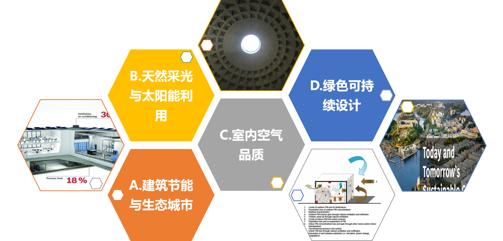

南京大学绿色建筑与城市环境国际研究中心（原可持续建筑研究中心）成立于2010年，依托南京大学建筑与城市规划学院， 致力于绿色建筑与生态城市相关学科的前沿理论研究和绿色建筑与生态城市设计的实践探索。
目前，中心下设有四个主要研究方向：

中心现有专/兼职人员12人，其中包括教授4名，副教授4名。所有科研成员均具有博士学位，并都有国外学习、工作经历，成员具备先进的知识和视野。 近年来，中心承担多项科研任务，主要包括国家重点研发计划及科技支撑项目3项，国家自然科学基金6项，以及多项省部级项目和国际项目。
中心建有“建筑物理与绿色建筑实验室”，现有面积500余平方米，已建成包括大型高精度人工气候室在内的一批建筑节能与环境设备测试试验台，购置了大量的建筑环境、建筑节能测试仪器。
中心重视对外学术交流和研究平台建设。近年来，先后与美国雪城大学、杜克大学、意大利萨兰托大学、日本东京大学等近10余所国际知名的大学和科研院所建立了合作关系。 通过与国际一流大学的跨学科国际合作，开展建筑节能与城市环境领域的前沿科学研究，部分研究成果达到国际先进水平。 为结合国情服务江苏，中心与江苏省建筑科学研究院有限公司建立了科研合作关系，在研究方面相互合作与优势互补。 此外，还充分利用学院的学科优势，将研究成果与设计实践相结合，先后与学院的国家级工程中心（中国建筑设计研究院）、南京大学建筑规划设计研究院有限公司等规划 设计单位建立产学研合作基地。
经过近年来的研究探索，南京大学绿色建筑与城市环境国际研究中心在支持绿色建筑科学探索研究、室内空气品质研究、城市形态与微气候关联性研究、 城市设计探索和计算机辅助研究与设计方面初步形成了自己的特色。
The International Research Center for Green Buildings and the Urban Environment (GBUE) at Nanjing University (originally Center for Sustainable Building Research) was founded in 2010. The center is dedicated to the frontier theoretical research of green buildings and eco-city related disciplines and the practical exploration of green buildings and eco-city design.
Currently, the center has four main research directions:
（1）Building Energy Conservation and Eco-city, （2）Indoor Air Quality (IAQ), （3）Daylighting and Solar Energy Utilization, （4）Green Sustainable Design.
The center has 12 full-time/part-time faculty and staff members, including 4 professors and 4 associate professors. All researchers have doctoral degrees, and have foreign study and work experiences. They have advanced knowledge and vision. In recent years, the center has undertaken a number of scientific research tasks, including three national key R&D projects / science and technology support projects, six National Natural Science Foundation projects, as well as a number of provincial, ministerial and international projects.
The center has a "Building Physics and Green Buildings Laboratory" with an area of more than 500 square meters. It has built a number of building energy-saving and environmental equipment test benches.
The center attaches great importance to the construction of academic exchanges and research platforms. In recent years, it has established collaborative relations with more than 10 internationally renowned universities and research institutes, such as Syracuse University (USA), Duke University (USA), University of Salento (Italy) and University of Tokyo (Japan). Through interdisciplinary international collaboration with world-class universities, the center have carried out front scientific research in the field of building energy conservation and urban environment, and some of the research outcomes have reached the international advanced level. In order to serve Jiangsu Province, the center has established a scientific cooperation relationship with Jiangsu Research Institute of Building Science Co., Ltd, which complements each other in research. In addition, it makes full use of the discipline advantages of the institute, combines research results with design practice, and successively establishes industry-university-research cooperation bases with the National Engineering Center (China Architectural Design and Research Group) and the Institute of Architectural Design and Planning Co., Itd, Nanjing University.
Through the research and exploration in recent years, the International Research Center for Green Buildings and the Urban Environment of Nanjing University has developed its own features in supporting the scientific exploration and research of green building, indoor air quality, urban morphology and microclimate, urban design and computer-aided design, etc.